UDN
Search public documentation:
MeshPaintReferenceCH
English Translation
日本語訳
한국어
Interested in the Unreal Engine?
Visit the Unreal Technology site.
Looking for jobs and company info?
Check out the Epic games site.
Questions about support via UDN?
Contact the UDN Staff
日本語訳
한국어
Interested in the Unreal Engine?
Visit the Unreal Technology site.
Looking for jobs and company info?
Check out the Epic games site.
Questions about support via UDN?
Contact the UDN Staff
网格物体描画参考指南
概述
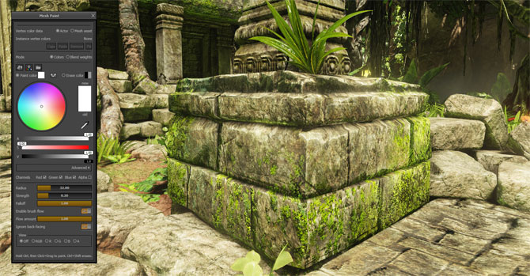
快速指南
- 激活网格物体描画工具并选择您的网格物体actor。
- 确保分配到您的网格物体上的材质使用了顶点颜色或alpha。
- 设置描画颜色并适当地调整其它的画刷属性。
- 在按下Ctrl键的同时，点击并拖拽您的网格物体来进行描画！
网格物体描画模式
 当在这个模式时，您仍然可以执行许多类似于相机移动及选择等非常通用的编辑器动作，但是某些功能是不能使用的。同时，您将会注意到，您的透视口将会被强制为 real-time mode(实时模式) ，这是这个系统的要求。
当在这个模式时，您仍然可以执行许多类似于相机移动及选择等非常通用的编辑器动作，但是某些功能是不能使用的。同时，您将会注意到，您的透视口将会被强制为 real-time mode(实时模式) ，这是这个系统的要求。
在网格物体上描画着色
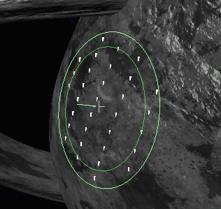
您可以把描画画刷想象为沿着网格物体几何体的表面法线进行投射的圆柱体，该圆柱体的中心是您鼠标下面的网格物体上的点。圆形的画刷轮廓为您显示了画刷的半径。内部的圆圈显示了画刷的 falloff(衰减) (或内半径)。您或许已经领会到它的用途，但是从画刷中心伸出的小线是画刷表面的法线。 要想进行描画，请 按下Ctrl键 ，然后在网格物体的表面上点击并拖拽鼠标。反之，您也可以按下 Shift 并在网格物体的表面上点击并拖拽来抹除颜色。 当您每次点击网格物体表面以及每次鼠标位置改变(拖拽)时，将会那个表面上进行描画。同时，如果启用了 brush flow(流动画刷) 功能，描画将会在每次渲染场景时进行应用。 注意您仅能在透视口窗口中进行描画。
注意您仅能在透视口窗口中进行描画。
描画颜色
默认的网格物体描画模式是直接描画颜色数据(红、绿、蓝、alpha)。您可以选择描画颜色和抹去颜色，然后通过画刷来把这些颜色应用到网格物体上。当您的材质配置为以某种有趣的方式把您的顶点颜色和您的像素着色器相结合时，这个模式是有用的。 当 描画模式 设置为 colors(颜色) 时，您会看到这些选项：
| 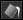 | 使用 Paint color（描画） 颜色填充正在描画的网格物体或实例, 针对于 Channels(通道) 设置。 |
 | 从选中实例复制顶点颜色到源网格物体资源。 |
| 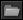 | 导入一个要使用的.TGA图像文件来填充选中实例的顶点颜色。 |
 | 描画时所应用的颜色 (Ctrl + 左击鼠标+ 拖拽)。一个样本显示了当前颜色的预览效果。可以使用该工具的内置颜色选择器来设置颜色。 |
 | 当执行抹去颜色操作时所使用的抹去颜色 (Ctrl + Shift + 鼠标左击+ 拖拽)。一个样本显示了当前颜色的预览效果。可以使用该工具的内置颜色选择器来设置颜色。 |
 | 切换 Paint color(描画颜色) 和 Erase color（抹去颜色） 。 |
 | 这些复选框设置了应该受到该描画画刷影响的 颜色/alpha 通道。 |
画刷设置
这部分描述了所有工具模式间通用的画刷设置。注意，对于使用滑块控制的选项，您可以通过点击并拖拽它来快速地改变值，或者您可以根据需要点击它并输入数值。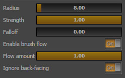
| 设置 | 描述 |
|---|---|
| Radius(半径) | 画刷的半径，以Unreal单位为单位。另外，画刷的深度偏移值是这个半径的一半。 |
| Strength(强度) | 设置当启用描画功能时，您每次点击或移动鼠标光标时要应用的描画量。同时，如果启用了_brush flow(流动画刷)_ ，它是指应用到表面的画刷强度的百分比量(流动量)。 |
| Falloff (衰减) | 设置了画刷的轻度如何随着距离衰减。衰减值为1.0意味着画刷的中心是100%的强度，然后沿着画刷的半径线性地衰减。衰减值为0.5意味画刷半径的一半内的画刷强度为100%，然后线性地进行衰减。衰减值为0.0意味着画刷在整个半径上的强度都为100%。注意，不论这个设置是什么，_depth-based falloff(深度偏移)_ 都将处于激活状态。 |
| Enable brush flow(启用画刷流动描画) | 这个选项配置画刷在每个单独的渲染帧中进行描画着色，即使当您没有移动光标时也是这样。它产生的效果和油漆喷雾器的效果类似。 |
| Flow amount(流动画刷强度系数) | 当 Enable brush flow(启用流动画刷) 时，这个值设置了对每次渲染帧进行描画着色时所使用的画刷的强度，它是画刷强度的百分比值。 |
| Ignore back-facing(忽略相机背面) | 当启用时，将会忽略背对相机的三角形，并且它们将不会受到描画画刷的影响。 |
资源和实例
尽管网格物体描画工具允许您在实际的网格物体资源上进行描画，但是大多数情况下，您或许想在放置到关卡中的网格物体实例上进行描画着色。比如，如果您有一个柱子网格物体，它被放置在您地图中的四个位置上，您可以单独地描画每个实例。 使用 Vertex color data(顶点颜色数据) 选项来设置网格物体描画工具是编辑地图中的actor的实例还是编辑实际的网格物体源资源。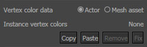
| 选项 | 描述 |
|---|---|
| Actor | 描画存储在关卡中的静态网格物体实例组件中的颜色数据。 |
| Mesh asset(网格物体资源) | 编辑存储在原始网格物体资源中的颜色数据，这个数据可能被多个关卡共享。 |
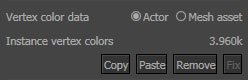
这通过顶点颜色数据(存储在地图包中)显示了 所使用的内存字节数 。这个值反应了当前选中的所有资源占用的内存总数。| 命令 | 描述 |
|---|---|
| Copy（复制） | 复制选中的网格物体的实例顶点颜色数据。请参照共享实例颜色数据部分获得更多信息。 |
| Paste(粘帖) | 粘帖先前复制的实例顶点颜色数据。请参照共享实例颜色数据部分获得更多信息。 |
| Remove(删除) | 放弃所有选中网格物体的数据并恢复默认顶点颜色。 |
| Fix(修复) | 尝试在重新导入的具有不同顶点数量的网格物体上匹配存储的实例数据。请参照顶点颜色匹配部分获得更多信息。 |
共享实例颜色数据
或许有时候您想描画一个网格物体，然后和同一个关卡中的其它网格物体实例来共享这些顶点颜色。比如，您有一个在室外地图使用的柱子网格物体，并且您想把柱子的基部描画为绿色，然后使得 仅 在那个地图中的所有实例按照那种方式显示。 通过使用 Mesh Paint Dialog(网格物体描画对话框) 中的 Copy(复制) 和 Paste(粘帖) 按钮可以轻松地在关卡中的多个实例之间复制及粘帖实例化的顶点颜色数据。 要想复制实例化的顶点颜色数据:- 选中包含要进行复制的颜色数据的实例，并按下 Copy(复制) 按钮。

- 选择要将颜色数据复制到的实例，并按下 Paste(粘帖) 按钮。
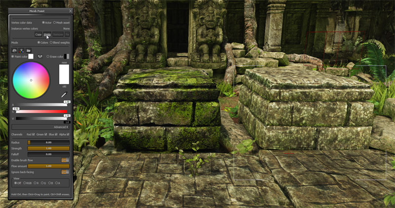
- 现在，颜色数据应该应用到了所有的实例上了。

顶点颜色匹配
当重新导入一个静态网格物体，其该网格物体的顶点数量和实例上的顶点颜色的数量不同，那么您将会在地图检测及烘焙过程中遇到如下错误："StaticMeshActor_73 (LOD 0) 具有不再和原始静态网格物体相匹配的手动描画的顶点颜色" 。
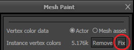
这个功能仅当网格物体需要修复时可用，否则它将会被禁用。该工具在大部分情况下都工作得很好，尤其是当您仅需要进行小量调整时。对网格物体进行的修改越多，颜色越不可能匹配。该功能的设计目的是总是匹配某个颜色，即使改变非常大也要匹配。我们选择不让这个工具进行自动化处理，因为那样如果您不喜欢那个结果就不能轻松地撤销修复了。另外，给网格物体描画添加这个功能意味着您可以在应用修复后轻松地进行润色处理。 原始网格物体: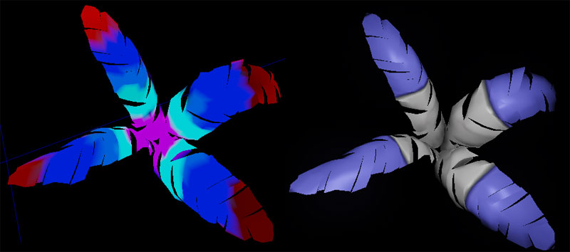
应用了修复的低多边形网格物体: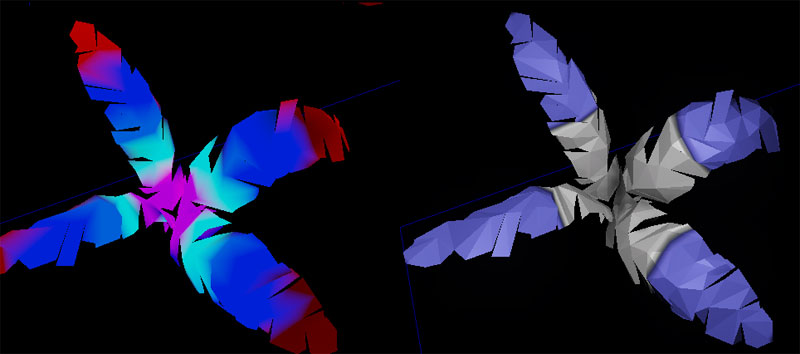
颜色和混合权重
除了直接描画颜色外，您可以把工具切换为 paint texture blend weights(描画贴图混合权重) 。通常当您配置您的材质使用顶点颜色通道作为两个或多个贴图之间的混合因素时，这个功能是有用的。这里网格物体描画工具通过在您描画的过程中 自动地正规化您的混合权重 来为您提供帮助。您可以通过简单地选择一个贴图索引然后开始进行描画，这个工具将会确保 颜色/alpha 值的设置是正确的。 当 描画模式 设置为 blend weights(混合权重) 时，将会出现这些选项。
| Texture count(贴图数量) | 通过设置和网格物体相关的材质中您混合的贴图的数量来配置混合权重“策略”。当您改变这个选项时，_Paint texture(描画用的贴图)_ 和 Erase texture(抹去用的贴图) 的选择将会更新。请参照 Blend weight material setup(混合权重材质设置) 部分来获得更多信息。 |
|---|---|
| Paint texture(描画用的材质) | 当启用描画功能时，选择您每次点击或移动鼠标光标时要应用的贴图索引。(Ctrl+鼠标左击+拖拽) |
| Erase texture(抹去用的材质) | 当抹去材质时，“抹去器”所使用的贴图索引。(Ctrl+Shift+鼠标左击+拖拽) |
视图模式
您可以使用视图模式来控制在透视口中可视化顶点颜色和alpha值。
| Off(关闭) | 恢复为默认的编辑器视图模式。 |
|---|---|
| RGB | 显示仅具有RGB顶点颜色的不带光照的静态网格物体。 |
| R | 显示仅具有红色顶点颜色的不带光照的静态网格物体。 |
| G | 显示仅具有绿色顶点颜色的不带光照的静态网格物体。 |
| B | 显示仅具有蓝色顶点颜色的不带光照的静态网格物体。 |
| A | 显示仅具有顶点alpha的不带光照的静态网格物体。 |
设置材质
EngineMaterials.upk 中提供了一些示例材质，示范了网格物体描画工具的一些可能的应用。请使用内容浏览器来搜索 TexturePaint 或 VertexPaint 来查看这些实例。
这个实例展示了您应该如何使用顶点alpha值来在材质编辑器中混合两个漫反射贴图。
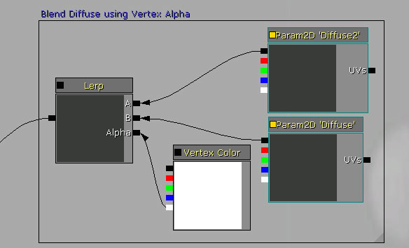
材质实例
这个实例使用了VertexPaint_2Tex_Color material 材质，可以在EngineMaterials.upk中找到该材质。这个示例材质做了三件特殊的事情：
- 通过描画的顶点颜色(RGB)来调制漫反射颜色
- 使用顶点alpha通道(A)中存储的混合权重来混合两个单独的漫反射贴图(Diffuse, Diffuse2)。
- 使用顶点alpha通道(A)中存储的混合权重来混合两个单独的法线贴图(Normal, Normal2)。

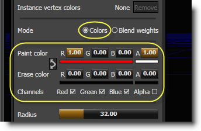
接下来使用 "Blend Weight (混合权重)"描画模式来描画顶点alpha(A)。这个值将会用于在一组 漫反射/法线 贴图间进行插值。这个屏幕截图在"alpha only(纯alpha )" (A)视图模式下的显示状态：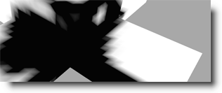
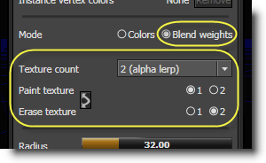
最后，这里是最终的效果，它完全地被照亮并且具有阴影效果。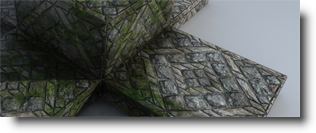